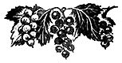

Смородина

Чёрная смородина
В нашей стране культура чёрной смородины приобрела исключительное значение. Этим она обязана в первую очередь богатством содержания витамина С, который играет важную роль в питании человека. Отсутствие в пище витамина С вызывает цингу.
Большим достоинством ягод чёрной смородины является и то, что они хорошо переносят транспортировку и могут поступать на рынок из довольно отдалённых мест.
В настоящее время чёрную смородину культивируют почти во всех областях СССР. Она входит в стандартные сортименты не только северных областей, но и южных (Грозненская область, Дагестанская АССР и т. д.).
Большое значение приобрела чёрная смородина и для приусадебного садоводства. Несложность её культуры, исключительная ценность ягод, как пищевого продукта, возможность использования их для самого разнообразного вида переработок, начиная от различных домашних изделий и кончая ликёрами, завоевали симпатии населения к этой культуре.
Препятствием к более широкому продвижению чёрной смородины в приусадебное садоводство был несколько кисловатый вкус её ягод. В настоящее время получен ряд сортов с исключительными вкусовыми качествами ягод (8-й Девисона, Голиаф, Боскопский великан, Лакстон). Эти сорта привлекают всеобщее внимание и широко используются для потребления в свежем виде.
Наиболее широко распространена культура чёрной смородины в Ленинградской, Московской, Горьковской, Саратовской, Сталинградской, Куйбышевской, Курской, Воронежской областях, в Башкирской АССР. Она имеет распространение и в УССР.
- Чёрная смородина — многолетний кустарник. Побеги, вырастающие от основания куста, обычно идут на замещение основных, отмирающих веток.
- Листья смородины очередные, пяти- или трёхлопастные или цельные. На нижней стороне листовой пластинки расположены сидячие желёзки с резким, специфическим запахом. В пазухе листа однолетнего прироста закладывается плодовая почка, которая весной даёт цветочную кисть. Главная масса урожая располагается на однолетней, двулетней, трёхлетней или четырёхлетней древесине. Поэтому при культивировании чёрной смородины ветки старше четырёх лет вырезают.
- Цветки чёрной смородины с двумя околоцветниками. Чашечка трубчатая, пятинадрезная. Отгибы окрашены в красноватый, зеленоватый цвет. Венчик пятилепестковый. Лепестки мелкие, желтоватые или зеленоватые. Тычинок 4—5. Пестик на одном уровне с тычинками, выше или ниже их. Цветки чёрной смородины, даже самоплодных сортов, у которых пестик превышает тычинки, для нормального завязывания плодов нуждаются в переносе пыльцы насекомыми с тычинок на рыльце пестика. Завязь одногнёздная, многосемянная. Цветки расположены в пазухах прицветников и собраны в кисти.
- Плод чёрной смородины — ягода. Окраска ягод чёрная, зеленоватая, буроватая или желтоватая. Форма округлая, овальная или несколько сдавленная с полюсов.
Чёрная смородина принадлежит к семейству Saxifragaceae (камнеломковых), роду Ribes (рибес), подроду Eucoreosma (Jancz) Berger — чёрная смородина.
Культурные сорта чёрной смородины, в основном, произошли от вида Ribes nigrum. Отчасти имеют значение и другие виды:
- североамериканская смородина (R. americanum Mill.),
- восточносибирская смородина (R. dikuscha Tisch.),
- моховая смородина (R. procumbens Pall.).
Наиболее широко распространённым в СССР является вид чёрной смородины Ribes nigrum. Североамериканский и восточносибирский виды в небольшом количестве культивируют в Сибири и на Дальнем Востоке. «Моховая» смородина встречается свободно растущей в Восточной Сибири.
Смородина чёрная (R. nigrum L. (s. str.))
- Кусты мощные, до 2 м высоты.
- Листья крупные, 3–5-лопастные. Основание листа прямое или с выемкой.
- Цветки колокольчатые. Чашелистики отогнутые, окрашенные в пурпуровый цвет. Кисти средней длины, с довольно редким расположением ягод.
- Плоды чёрные или бурые, круглые, с характерным запахом и вкусом. Большинство культурных сортов произошло от R. nigrum L. (s. str.).
Смородина сибирская (Ribes cyatiforme А. Pojark)
- Кусты невысокие.
- Листья 3–5-лопастные. Цветки продолговато-конусовидные. Чашелистики окрашенные в лиловато-сероватый цвет. Кисти средней длины.
- Плоды чёрные, бурые, зелёные, ароматичные, кисло-сладкие.
Смородина казахстанская (Ribes turbinatum A. Pojark)
- Кусты невысокие.
- Листья лопастные.
- Цветки телесного цвета.
- Плоды чёрные или бурые.
Смородина дикуша (Ribes dikuscha Fischei)
В Сибири известна под различными названиями: охта, алданский виноград, синяя смородина.
- Кусты пряморослые.
- Листья 3–5-лопастные.
- Цветки белые, блюдцевидные.
- Плоды синевато-чёрные, с характерным восковым налётом.
От этой смородины путём гибридизации получен сорт Приморский чемпион.
Смородина моховая (Ribes procumbens Pall)
- Кусты небольшие, низкие.
- Листья мелкие, 3–5-лопастные, основание прямое или с выемкой.
- Цветки красноватые.
- Плоды довольно крупные, различной окраски, встречаются почти чёрные, буро-красные и даже розоватые или беловатые. Плоды часто выделяются высокими вкусовыми качествами.
Смородина моховая требовательна к почвенно-климатическим условиям. В европейской части Союза ССР чувствует себя довольно плохо и даёт низкий урожай.
Смородина американская (Ribes americanum Mill)
- Кусты довольно высокие.
- Листья 3–5-лопастные.
- Цветки колокольчатые, желтоватые.
- Плоды чёрные, приятного своеобразного вкуса.
Золотистая смородина (Ribes odoratum Wendl.)
- Золотистая смородина — многолетний кустарник. Растения достигают до 3 м высоты. Так же, как и у чёрной смородины, от основания куста вырастают новые побеги, которые в дальнейшем идут на замену старых, отсыхающих веток.
- Листья золотистой смородины очередные, трёх- или пятилопастные, крупнозубчатые, зелёные. По внешнему виду они скорее напоминают листья крыжовника. Осенью листья золотистой смородины приобретают характерную пёструю окраску — желтовато-красновато-зеленоватую.
- В пазухе листа закладывается почка. Уже на однолетнем приросте взрослых кустов эти почки являются плодовыми.
- Цветки золотистой смородины, по сравнению с цветками чёрной и красной смородины, очень крупные. Они яркой золотисто-жёлтой окраски, очень душистые, с двумя околоцветниками. Чашелистиков — 5, лепестков также — 5. Чашечная трубочка длинная, чашелистики вдвое короче трубочки, отогнутые, или распростёртые. Пестики несколько превышают тычинки. Рыльце пестика раздвоенное. Цветки расположены в пазухах прицветников и собраны в кисти. Аромат цветков привлекает насекомых, и пчёлы охотно посещают их.
- Плод — ягода. Окраска плодов очень разнообразная. Она может быть чёрной, оранжевой, пурпуровой, розоватой. Форма ягод округлая или несколько вытянутая. Ягоды содержат сахара, кислоты, ароматические вещества и витамины (А и С). Они являются ценным пищевым продуктом.
Широко используются для потребления в свежем виде и переработки.
Период плодоношения растянутый. Ягоды созревают неодновременно.
Урожайность лучших форм золотистой смородины очень высокая. В отношении морозостойкости они часто уступают чёрной смородине. В зиму 1941/42 г. кусты золотистой смородины довольно сильно подмёрзли.
Размножается золотистая смородина черенками, отводками, корневой порослью.
В СССР первым обратил внимание на золотистую смородину И. В. Мичурин и от посева её семян получил ряд сеянцев.
Вот что И. В. Мичурин писал по этому поводу:
«Я. О. Немец описал новый сорт смородины из Америки, где выдавали её за гибрид между простой европейской чёрной смородиной и Ribes aureum, названный именем его производителя, — мистера Крандаля в Ньютоне (штат Канзас). Весной 1895 г. я выписал 3 экземпляра этого сорта от Шпета из Берлина. Первое лето ягод не было, а в следующую же зиму все 3 экземпляра отмерли и, хотя летом кусты от корня опять восстановились, но, не давая плодов, зимой отмёрзли и лишь при помощи солидной защиты в зиму 1900 г. они убереглись, в следующее лето дали довольно хороший урожай. Ягоды были величиной в крупную вишню, окраска чёрная, форма низкорепчатая с сильно выраженными рёбрами, вкус приятный кисло-сладкий, семечек мало, и они по величине едва заметны в мякоти. Из посеянных от этого урожая семян в 1901 г. получилось несколько сот сеянцев, причём наружный габитус их не имел никаких признаков участия в произведении этого сорта простой чёрной смородины, — он ничем совершенно не отличался от вида Ribes aureum. Это, по моему мнению, является неопровержимым доказательством того, что смородина Crandall's black currant есть разновидность Ribes aureum, а совсем не гибрид. После зимы из числа сеянцев оказались несколько экземпляров вполне выносливыми к нашим морозам и в 1903 году дали обильный урожай крупных ягод, причём окраска их проявлялась в трёх различных колерах: чёрном, ярко-жёлтом и ярко-шарлаховом. Величина ягод была несколько меньше, форма круглая, ребристость совершенно исчезла. Посев семян этой второй генерации дал уже все без исключения сеянцы выносливые. Воспитанные растения приносят массу ягод; варенье из них превосходно, как по окраске, особенно пикантному вкусу и аромату, так и по очень незначительной величине малозаметных зёрен. Урожайность чрезвычайно щедрая. Рост до 3-х аршин. Растение требует тучной почвы. Ягоды созревают во второй половине июля...»
Эти сеянцы в дальнейшем были использованы в селекционной работе.
В настоящее время в СССР нет ещё сорта золотистой смородины, который был бы широко распространён.
В коллекционных насаждениях под названием Крандаль Мичурина обычно культивируют сеянцы. Многие из них очень урожайны (дают до 7–10 кг с куста). Вес ягод доходит до 2 г. Плоды у многих сеянцев по созревании склонны к осыпанию. Время созревания позднее; более позднее, чем у сортов чёрной смородины. Окраска ягод может быть чёрной, жёлтой, рубиновой, розовой.
Ягоды используют для потребления в свежем виде, для переработки, на замораживание.
Ценные качества лучших сеянцев: урожайность, позднее созревание ягод, их приятный вкус, декоративность.
Чёрная смородина — одна из наиболее морозостойких ягодных культур в условиях европейской части Союза ССР. Этим объясняется её далёкое продвижение на север. В Сибири европейские сорта часто страдают от зимних холодов и в этом отношении не могут конкурировать с местными сортами, прекрасно переносящими суровые климатические условия.
Из европейских сортов наиболее зимостойкими являются:
менее зимостойкие сорта:
- Боскопский великан и др.
Почки чёрной смородины рано пробуждаются весной и могут быть повреждены весенними заморозками.
Большой разницы во времени зацветания сортов чёрной смородины нет (если не считать наиболее рано зацветающего сорта чёрной смородины Приморский чемпион). Разница во времени зацветания сортов колеблется в пределах 2–6 дней (в среднем). Период цветения продолжается около двух недель и в значительной степени зависит от погодных условий. В более холодную погоду цветение протекает медленнее. Первыми распускаются цветки, расположенные у основания кисти.
По времени созревания между сортами существует большая разница, которая колеблется в пределах месяца и больше. Это даёт возможность значительно растянуть потребление ягод этой ценной культуры в свежем виде. Созревание ягод в кисти идёт в том же последовательном порядке, как и цветение, т. е. сначала поспевают ягоды, расположенные у основания кисти, а затем последующие.
По времени созревания сорта делятся на:
- ранние,
- средние,
- поздние,
- очень поздние.
Время созревания сортов чёрной смородины
Относятся к самоплодным сортам чёрной смородины промышленные сорта:
- Боскопский великан,
- Лия плодородная,
- Неаполитанская,
- Кент,
- Сентябрьская Даниэля,
- Лакстона,
- 8-й Девисона,
- Голиаф,
- Приморский чемпион.
Но необходимо помнить, что для нормального плодоношения плантаций чёрной смородины этого ещё недостаточно. Дело в том, что у всех вышеперечисленных сортов не во всех цветках пестики равны тычинкам, у некоторых они значительно выше последних, и поэтому такие цветки нуждаются в переносе пыльцы с тычинок на рыльце пестика насекомыми. Цветки чёрной смородины охотно посещаются пчёлами и другими насекомыми. В тех случаях, когда цветение чёрной смородины протекает при плохих погодных условиях, препятствующих лёту насекомых, часть цветков самоплодных сортов не даёт завязей и урожай понижается.
Как показали опыты, проведённые на Московской плодово-ягодной опытной станции, перекрёстное опыление сортов чёрной смородины нередко благотворно влияет на величину ягод и вместе с тем повышает их урожайность.
Урожайность сортов чёрной смородины может быть очень высокой. Если средний урожай для многих сортов чёрной смородины (Лии плодородной, Боскопского великана, Неаполитанской и др.) исчисляют в 6 т, то рекордные урожаи составляют до 20 т с гектара.
Чёрная смородина — влаголюбивое растение. Она хорошо растёт и плодоносит на воздухопроницаемых, богатых питательными веществами почвах.
Из вредителей чёрная смородина повреждается:
- огнёвкой (Zophodia convalutella Hb.),
- пилильщиком (Pteronus ribesii Scop.),
- тлёй (Aphis ribis L.) и некоторыми другими.
Из болезней смородина особенно сильно страдает от антракноза. Эта болезнь начинает обычно развиваться с середины июля. Сначала по краям листа появляются бурые пятна, которые постепенно разрастаются и охватывают всё большую и большую площадь листа, и, наконец, вызывают его преждевременное отмирание. Такое преждевременное опадение листьев ослабляет развитие растений и понижает их урожайность.
Антракнозом наиболее сильно поражаются следующие сорта:
Более устойчивый сорт Голиаф.
Химический состав ягод смородины очень различен.
Химический состав ягод чёрной смородины
(по данным Н. М. Павловой, 1932 г.)
К сортам с наибольшим содержанием сахара относятся Боскопский великан (9,75%) и Голиаф (8,82%).
Наряду с высокой сахаристостью, у Боскопского великана оказалась и высокая кислотность (3,25%). Из анализированных сортов наибольшей кислотностью выделилась Лия плодородная (3,75%).
Несколько иные данные по химическому составу ягод получены Институтом им. Мичурина и другими опытными станциями.
Химический состав ягод чёрной смородины
Следует отметить очень высокое содержание сахаров у сорта 8-й Девисона (11,08%). Общим для смородины является довольно значительное содержание кислоты (до 4%).
По содержанию витаминов сорта также различаются между собой.
В 1945 г. был проведён анализ ягод различных сортов чёрной смородины. Анализ производили в лаборатории Витаминного института.
Содержание витаминов в ягодах различных сортов чёрной смородины
По данным, полученным в 1945 г., особенно богат витамином С сорт Неаполитанская. Высоко содержание его и в ягодах сорта Кент. Несколько меньше в ягодах Лакстона и Сентябрьской Даниэля (258,3; 237,2 мг). Меньше всего витамина С было в ягодах сорта Голиаф. Анализ также показал, что содержание витамина С, сахаров и кислот может меняться по одному и тому же сорту в зависимости от срока съёма ягод.
Районирование сортов чёрной смородины
Культура чёрной смородины пользуется заслуженной популярностью. Однако её сортимент, сравнительно с сортиментом красной смородины, не богат. Весьма возможно, что это связано с использованием населением ягод дико растущих насаждений чёрной смородины.
Как указывалось, выше, по своему происхождению и распространению сорта чёрной смородины резко делятся на 2 группы:
- сорта европейского происхождения (успешно культивируемые в европейской части Союза ССР),
- сорта азиатского происхождения (культивируемые в азиатской части Союза ССР).
Наиболее распространённые сорта в европейской части СССР — Лия плодородная и Неаполитанская. Они входят в стандартный промышленный сортимент районов южной, средней и северной полосы СССР, а также Поволжья, главным образом, по первой и второй группам стандартных промышленных сортиментов. Эти 2 сорта по времени введения их в культуру являются наиболее старыми. Позднее введены в культуру такие сорта чёрной смородины, как Боскопский великан, Голиаф, Сентябрьская Даниэля, 8-й Девисона, Лакстона, Кент и некоторые другие, которые начинают завоёвывать себе место в стандартных сортиментах.
Наиболее богаты сортименты средней полосы СССР: районы чернозёмной полосы, районы нечернозёмной полосы и районы северо-запада. Кроме Лии плодородной и Неаполитанской, такие сорта, как Боскопский великан, Голиаф, Лакстона, входят в сортимент всех областей этих районов. Часто встречаются сорта Кент и Сентябрьская Даниэля.
Беднее сортами районы южной полосы СССР и Поволжья.
Совершенно иной сортимент мы имеем в районах Урала, Западной Сибири, Восточной Сибири, Дальнего Востока. Здесь, главным образом, культивируются лучшие формы, выделенные из естественных насаждений, или новые сорта, полученные путём гибридизации европейских сортов с местными ценными формами (например, Приморским чемпионом).
Изменчивость сортов чёрной смородины по морфологическим и производственно-биологическим признакам
Сорта смородины, так же, как и сорта других плодово-ягодных культур, различаются по ряду морфологических и биологических признаков. Зная их, можно легко избежать той путаницы, которая нередко наблюдается на плантациях чёрной смородины.
Куст
По характеру роста кусты делятся на раскидистые, средне раскидистые и пряморослые.
Рис. 482. Пряморослый куст.
Раскидистость у одного и того же куста с возрастом может меняться. Обычно молодые растения более пряморослые, нежели старые, того же сорта.
Рис. 483. Раскидистый куст.
Почки
Почки некоторых сортов имеют существенные признаки отличия, но апробировать насаждения чёрной смородины по растениям без листьев и плодов очень трудно, а в некоторых случаях невозможно.
Рис. 484. Почки с округлой и заострённой вершиной.
Почки чёрной смородины различаются по следующим признакам:
- по величине — почки могут быть крупными, средними или мелкими;
- по форме — почки бывают с округлой вершиной или заострённой, широкие или узкие;
- по окраске верхних покровных чешуй — красноватая, зеленоватая; к сортам с зеленовато-беловатой окраской чешуй относится Белоплодная. Красноватая окраска у Лии плодородной, Боскопского великана;
- по опушению — верхние покровные чешуи почек могут быть опушёнными или неопушёнными.
Листья
Листья, расположенные на древесине различного возраста, неодинаковы. Наиболее характерными по своим признакам являются листья однолетних побегов, но и они, в известной степени, разнятся между собой в зависимости от положения на побеге.
Рис. 485. Листья чёрной смородины.
1 — лопасти острые; 2 — лопасти туповатые; 3 — основание с глубокой выемкой; 4 — основание с выемкой средней глубины; 5 — основание со слабой выемкой 6 — зубчики туповатые; 7 — зубчики острые; 8 — лист симметричный; 9 — лист несимметричный
Все ниже описываемые признаки листа относятся к листьям, расположенным в средней части однолетних побегов. Листья, расположенные на других частях побегов, описывают как исключение, когда они выделяются особенно характерными признаками.
- Величина. По величине листья делятся на крупные, средней величины и мелкие.
- Цвет. Окраска бывает зелёная, тёмно-зелёная, светло-зелёная, зелёная с голубоватым оттенком (серебристым), желтовато-зелёная.
- Блеск. Листья чёрной смородины бывают блестящие и матовые.
- Морщинистость. Поверхность листа чёрной смородины почти всегда неровная. Отдельные участки листа более или менее резко выпуклы, от этого зависит его морщинистость. Она бывает сильной, средней или слабой.
- Гофрированностъ. У гофрированных листьев от основания листа (место прикрепления черешка к выемке между средней и боковыми лопастями) идут крупные, выпуклые складки, по одной на каждой половине листа.
- Кожистостъ листа может быть сильной, средней и слабой.
- Опушение верхней поверхности листовой пластинки бывает сильное, среднее и слабое.
- Число лопастей. Лист чёрной смородины обычно пятилопастной. Встречаются листья, у которых четвёртая и пятая лопасти неясно выражены или отсутствуют.
- Заострённость лопастей бывает средняя, сильная слабая.
- Основание листа. Ценным признаком для распознавания сортов чёрной смородины является характер основания листовой пластинки. Основание может быть с глубокой выемкой, средне глубокой, небольшой или без выемки — прямое.
- Зубчики по краю листовой пластинки различаются по величине (крупные, средние и мелкие) и степени заострённости (сильно заострённые, средне или слабо заострённые).
- Симметричность листа. Листья симметричны, когда левая и правая половинки листа одинаковы; если половинки неодинаковы, лист не симметричный. У всех сортов чёрной смородины встречаются несимметричные листья, но у одних их больше, у других меньше. Довольно много несимметричных листьев у сорта Неаполитанская.
- Положение листовой пластинки. Листовая пластинка может располагаться в одной плоскости или же лист более или менее сильно изгибается. У некоторых сортов края листьев загибаются несколько кверху и тогда лист имеет как бы форму чашечки. Такие листья часто встречаются у сорта Неаполитанская. Когда края листа загибаются книзу, лист становится выпуклым.
Цветочные кисти
Цветочные кисти различаются:
- по длине — длинные, средней длины и короткие;
- по изогнутости — изогнутые и прямые;
- по положению в момент цветения — горизонтальное и наклонное;
- по оси кисти — опушённая, неопушённая;
- по расположению цветков — частое, средне частое, редкое.
Рис. 486. Горизонтальное положение цветочных кистей.
По времени цветения большинство сортов резко не отличается между собой. И даже такой позднопоспевающий сорт, как Сентябрьская Даниэля, цветёт почти одновременно с другими сортами. Наиболее рано зацветает Приморский чемпион.
Цветки
Цветки чёрной смородины колокольчатой формы, различаются они по следующим признакам:
- по величине — крупные, средней величины, мелкие;
- по окраске чашелистиков — зеленоватые или окрашенные в красноватый цвет;
- по длине тычинок и пестиков — тычинки могут быть одной длины с пестиками или короче их.
Плодовые кисти
Плодовые кисти для сортов чёрной смородины очень характерны; различаются они по следующим признакам:
- по длине — длинные, средней длины, короткие;
- по расположению кистей — одиночное, группами;
- по плотности (частота расположения ягод в кисти) — плотная, средне плотная, редкая.
Ягоды
Рис. 487. Форма ягод чёрной смородины.
Ягоды чёрной смородины различаются:
- по величине — крупные, средние и мелкие;
- по форме — округлые, овальные или несколько сплюснутые с полюсов;
- по наличию или отсутствию продольной бороздки на поверхности ягоды;
- по засохшим остаткам околоцветника, собранным в трубку большей или меньшей величины;
- по изменчивости их величины; у каждого сорта наиболее крупная ягода расположена у основания кисти, к вершине ягоды несколько мельчают; это уменьшение величины ягод у одних сортов более, у других менее значительно;
- по кожице плодов — толстой, средне толстой или тонкой;
- по окраске мякоти — зеленоватой или красноватой;
- по вкусу ягод — кислый, кисло-сладкий, сладко-кислый, сладкий;
- общая оценка вкуса — вкус плохой, посредственный, хороший, очень хороший, превосходный;
- по осыпаемости ягод после их созревания, которая различна в зависимости от прочности прикрепления ягоды к плодоножке.
Красная и белая смородина
Красная смородина обратила на себя внимание приблизительно в XIV в., и первое упоминание о ней в литературе относится к этому времени. Сначала её использовали, главным образом, для лечебных целей. Первой в Европе введена в культуру смородина обыкновенная, затем смородина скалистая. Когда был введён в культуру третий вид смородины — смородина красная, — осталось невыясненным.
В настоящее время культуре красной смородины уделяется всё большее и большее внимание. Её ягоды широко используются для переработки. Они идут в кондитерское производство, на приготовление соков, желе, мармелада. Из ягод белой смородины получают исключительно хорошее вино.
Ягоды красной и белой смородины идут и на потребление в свежем виде. Сорта белой смородины по вкусовым качествам ягод часто относят к десертным. В настоящее время имеются и среди красных сортов смородины такие, которые отличаются высокими вкусовыми качествами, например, Красный крест и др.
Особое значение для средней полосы СССР имеют ранние сорта красной смородины. Они поспевают в тот момент, когда на рынке, кроме дорогостоящих ягод земляники (и то в ограниченном количестве), нет других свежих плодов.
Учитывая, что культура красной смородины менее трудоёмка, связана с меньшими экономическими затратами, более продуктивна, чем культура земляники, она в отношении широкого снабжения населения нашей страны свежими ягодами имеет преимущество перед последней в тот момент, когда ягоды других культур ещё не поспели.
Красная и белая смородина относится к семейству Saxifragaceae (камнеломковых), роду Ribes, подроду Ribesiа.
В формировании культурных сортов приняли участие следующие виды и гибриды между ними:
Ribes vulgare Lam. — смородина обыкновенная, западноевропейская.
- Куст до 1,5 м высоты.
- Листья округлые. Основание листа с выемкой.
- Цветки плоские и блюдцевидные, с валиком на плодоложе.
- Ягоды округлые, мелкие, красные, прозрачные, кисловатые.
Var. macrocarpum Jancz — разновидность Ribes vulgare Lam.
- Кусты невысокие.
- Листья 3–5-лопастные, грубые, основание листа с выемкой.
- Цветки блюдцевидные, с валиком на плодоложе, довольно крупные.
- Плоды в противоположность плодам Ribes vulgare крупные.
Ribes amatoris N. Pavl. — смородина любительская (R. vulgare × R. vulgare v. macrocarpum).
- Кусты средней величины.
- Листья 5–7-лопастные с глубокой выемкой у основания, негрубые.
- Цветки блюдцевидные, с валиком на плодоложе.
- Плоды крупные, прозрачные, хорошего вкуса.
Ribes disputabile N. Pavl. — смородина спорная (Rib. rubrum × R. vulgare v. macrocarpum).
- Куст до 2 м высоты.
- Листья 3–5-лопастные. Основание листа прямое или со слабой выемкой.
- Цветки ширококолокольчатые, с красноватыми прожилками. Кисти длинные.
- Плоды средней величины, красные или белые, кислые.
Ribes petraeum N. Pavl. (sens. str.) — смородина скалистая (сборный вид).
- Куст большой.
- Листья кожистые. Основание листа с выемкой.
- Цветки колокольчатые, красноватые или пурпуровые. Цветоложе без валика.
- Ягоды красные или тёмно-пурпуровые, кислые.
В группу consp petraeum входит:
- Ribes petraeum, представленный несколькими формами:
- f. pyrenaica Berger, f.
- alpina Berger,
- f. carpatica (kit) Berger,
- смородина бледная — R. pallidum Otto et Dietrich (R. petraeum × R. rubrum);
- R. atropurpureum C. A. Meyer.
Эти формы встречаются в Азии, Африке и Европе.
Ribes rubrum L. — смородина красная (сборный вид).
- Куст большой, до 2 м высоты.
- Листья кожистые. Основание с выемкой.
- Цветки чашевидной формы. Цветоложе без валика.
- Плоды красные, округлые, несколько сплюснутые с полюсов.
Ribes rubrum L. распространён в Европе и Азии.
Ribes Palczewskii (Jancz) Pojar — смородина Пальчевского.
- Кусты около 1,5 м высоты.
- Листья крупные, с основанием прямым или с выемкой.
- Цветки небольшие, зеленоватые. Кисти короткие.
- Плоды крупные, красные.
Встречается на Дальнем Востоке.
Ribes Warscewiszii Jancz — смородина Варшевича.
- Куст сильный, высокий.
- Листья 3–5-лопастные, округлые.
- Цветки блюдцевидные, со слабо выраженным валиком на плодоложе, красноватые. Кисти имеют до 15 цветков.
- Плоды круглые, характерной гранатовой или тёмно-пурпуровой окраски, кислые.
Эта смородина получена Янчевским из семян, взятых на Алтае. В настоящее время её вводят в культуру в европейской части Союза ССР.
Красная и белая смородина так же, как и чёрная, — многолетний кустарник.
- Побеги, вырастающие от основания куста, идут на его формирование, на замещение старых, отмирающих веток.
- Листья очередные, 5–3-лопастные или цельные.
- В пазухах листьев закладываются плодовые почки. У красной и белой смородины они более многочисленные, чем у чёрной.
- На однолетней древесине расположение кистей одиночное. На двулетней и более старой древесине на коротких веточках почки расположены группами. Особенно много плодовых почек находится на границе однолетнего и двулетнего прироста.
- Цветки красной и белой смородины с двумя околоцветниками.
- Чашечка имеет колокольчатую, чашевидную или блюдцевидную форму.
- Лепестков венчика пять, зеленоватой или желтоватой окраски, мелких. На плодоложе некоторых сортов своеобразный валик, зеленоватой или красноватой окраски.
- Завязь одногнёздная, многосемянная.
- Тычинок пять. Столбиков два, сросшихся друг с другом. Рыльце пестика раздвоенное.
- Цветки расположены в пазухах прицветников и собраны в многоцветковые кисти.
- Плод — ягода.
- Семена многочисленные. У сортов красной смородины окрашены в красноватый цвет различных оттенков; у сортов белой смородины — беловатые или желтоватые, также различных оттенков.
- Форма округлая, овальная, грушевидная; встречаются неравнобокие ягоды или сдавленные с полюсов.
- Ягоды содержат сахара, кислоты, ароматические вещества и витамины.
Кусты красной и белой смородины пробуждаются весной на несколько дней позднее кустов чёрной смородины. Разница во времени зацветания по сортам красной смородины незначительна и равна примерно 2–8 дням. Период цветения зависит от погодных условий. Холодная погода задерживает распускание цветков. Период цветения равен примерно 14–18 дням. Первыми распускаются цветки у основания кисти, затем начинают последовательно раскрываться и цветки, расположенные за ними.
По времени созревания между сортами разница более значительная. Созревание ягод идёт в том же порядке, как и цветение. Сначала поспевают ягоды, расположенные у основания кисти, затем расположенные ближе к вершине.
Урожайность лучших сортов красной смородины очень высокая, выше, чем сортов чёрной смородины. Рекордные урожаи около 30 т с гектара.
Красная и белая смородина требовательны к почве, удобрению и уходу. Дают хорошие урожаи на почвах, богатых питательными веществами, на хорошо защищённых участках.
Сорта красной и белой смородины, в основном, самоплодны. Они хорошо размножаются отводками. Могут размножаться зелёными и деревянистыми черенками и делением куста.
Сорта красной и белой смородины менее морозостойки, чем сорта чёрной. В зимы 1928/29, 1939/40 и 1941/42 гг. они в той или иной степени пострадали. Наименее морозостойкими являются сорта, происшедшие от смородины обыкновенной.
По степени повреждаемости зимними морозами сорта красной и белой смородины делятся на 2 группы:
- первая группа — сорта, у которых подмерзал в той или иной степени однолетний прирост,
- вторая группа — сорта, у которых повреждалась не только однолетняя древесина, но вымерзали и отдельные многолетние ветки.
В первую группу входят:
Во вторую группу входят:
- Английская белая,
- Версальская красная,
- Бессемянка,
- Красный крест,
- Файя плодородная,
- Чулковская.
Разница во времени созревания ягод по сортам большая. При апробации сортов она играет существенную роль.
По времени созревания сорта делятся на ранние, средние и поздние.
Время созревания сортов красной и белой смородины
По урожайности сорта красной и белой смородины делятся на урожайные, среднеурожайные и неурожайные.
Урожайные сорта:
- Английская белая,
- Рынок Лондона,
- Версальская белая,
- Версальская красная,
- Виктория,
- Голландская белая,
- Голландская красная,
- Гондуин,
- Замок Рейби,
- Замок Хаутона,
- Латурнайс,
- Файя плодородная,
- Чулковская,
- Красный крест.
Хорошие урожаи они дают в определённых почвенно-климатических условиях, при соответствующем удобрении и уходе за насаждениями.
Наиболее высокие урожаи красной и белой смородины доходят до 25–30 т с гектара (сорт Латурнайс на Московской плодово-ягодной опытной станции дал при пересчёте урожая опытных кустов на гектар 30 т).
По степени поражаемости антракнозом сорта красной и белой смородины резко различаются между собою и могут быть разделены на 3 группы:
- первая группа — сорта поражаются слабо или очень слабо,
- вторая группа — сорта поражаются средне,
- третья группа — сорта поражаются сильно.
Степень поражаемости антракнозом сортов красной и белой смородины
По химическому составу ягод сорта красной смородины сильно разнятся.
Из сортов красной и белой смородины наибольшим содержанием сахаров выделился сорт Латурнайс (10,77%), второе место занял Рынок Лондона (9,21%). Наибольшим содержанием кислоты отличается сорт Бессемянка (кислотность по яблочной кислоте 3,80%).
Химический анализ ягод сортов красной и белой смородины (в процентах)
(по данным Павловой)
Данные эти не являются исчерпывающими и могут изменяться в зависимости от погодных условий, ухода и т. д.
Из красных и белых сортов смородины наибольшей популярностью пользуются красные, несмотря на то, что белые сорта смородины очень часто во вкусовом отношении намного превосходят красные. Ареал возможного распространения сортов красной смородины очень широк и охватывает области не только европейской части Союза ССР, но и азиатской.
Наиболее крупноплодными сортами являются сорта красной смородины, происшедшие от разновидности смородины обыкновенной (Ribes vulgare Lam.) и смородины крупноплодной. Эти сорта являются наиболее требовательными как к уходу, так и к почвенно-климатическим условиям. Они менее морозостойки, обычно сильно поражаются антракнозом и формируют менее мощные кусты, чем, например, Голландская красная, являющаяся гибридом R. rubrum L. × R. petraeum Wulf.
Однако некоторые из них введены в стандартный промышленный сортимент областей. К таким сортам, например, относится Файя плодородная.
Изменчивость сортов красной и белой смородины по морфологическим и производственно-биологическим признакам
Сорта красной и белой смородины, происшедшие от разных видов, хорошо различаются между собою по кустам, листьям, цветкам, кистям и ягодам.
- Кусты различаются по величине (большие, средней величины, небольшие), по характеру роста (пряморослые, раскидистые, средне раскидистые, слабо раскидистые).
- Однолетние побеги их могут быть толстыми или тонкими.
- Листья различаются по величине (крупные, средней величины, мелкие).
- По окраске листья делятся на тёмно-зелёные, зелёные, светло-зелёные.
- Листья некоторых сортов имеют голубоватый оттенок.
- Блеск листа может быть сильным, средним, слабым или лист матовый.
- Морщинистость листьев сильная, средняя, слабая или листья гладкие. Различают мелкую и крупную морщинистость.
- Кожистость листа сильная, средняя или слабая.
- Верхняя и нижняя поверхности листовой пластинки более или менее сильно опушены.
- Лопасти листа различаются по длине (длинные, средней длины, короткие), ширине (широкие, средне широкие, узкие), заострённости (сильной, средней и слабой).
- Основание листа. Один из наиболее характерных и важных признаков листа красной и белой смородины — выемка основания. Она глубокая, средняя или мелкая. Основание может быть прямым или несколько вытянутым. У одного и того же сорта могут встречаться листья с различными типами основания.
- Зубчики по краю листовой пластинки крупные, средней величины или мелкие; неодинаково заострённые (сильно заострённые, средне, слабо заострённые или туповатые).
- По симметричности листья делятся на несимметричные и симметричные.
- Изменчивость листьев на однолетних побегах (в средней части) более или менее резко выражена.
- Цветочные кисти различаются по длине (длинные, средней длины, короткие), изогнутости (сильной, средней, слабой или кисть не изогнутая).
- Расположение цветков в кисти — частое, средне частое или редкое.
- Время цветения — раннее, среднее или позднее.
- Цветки для сортов красной и белой смородины очень характерны. Величина их изменяется от крупной до мелкой.
- Форма цветков смородины — колокольчатая, чашевидная или блюдцевидная. На плодоложе цветка более или менее резко выраженный валик, окрашенный в зеленоватый или различных оттенков красноватый цвет. Иногда валик отсутствует.
- Окраска цветков красной смородины разнообразна. Более ярко окрашены чашелистики и подчашечная трубка. Они зеленоватые, желтовато-зеленоватые или красноватые.
- Плодовые кисти делятся на длинные, средней длины и короткие.
- Расположение ягод в кисти — редкое, средне редкое или частое.
- Черешок кисти различается по длине (длинный, средней длины или короткий), по хрупкости (ломкий и неломкий).
- Ягоды красной смородины различаются по величине, форме, окраске, кожице.
- Величина — крупная, средняя, мелкая.
- Форма — ягоды большинства сортов имеют округлую форму или несколько сдавлены с полюсов, встречаются ягоды неравнобокие, с вытянутым основанием или грушевидной формы.
- Окраска — красная, более тёмная или светлая, или розовая. У белоплодных сортов она беловатая или желтоватая.
- Кожица сортов белой смородины обычно прозрачная. У сортов красной смородины она менее прозрачная. Жилки не всегда ясно видны. Засохшие остатки околоцветника собраны в трубку большой, средней или небольшой величины.
- Семена делятся на крупные, средней величины и мелкие.
- Вкус ягод кислый, сладко-кислый, кисло-сладкий или сладкий.
- Общая оценка вкуса ягод — вкус плохой, посредственный, хороший, очень хороший, превосходный.